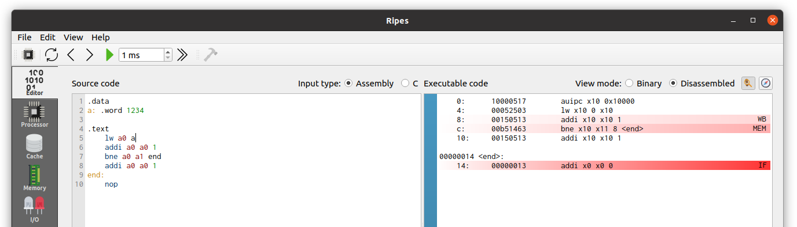
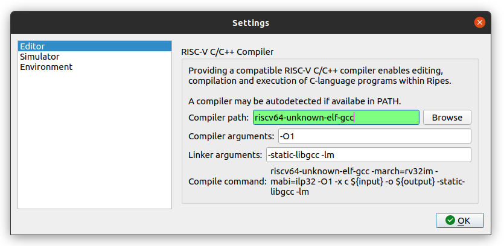

แท็บ Editor
หน้าจอแรกที่ใช้เขียนโค้ด Assembly หรือภาษา C และดู machine code ที่ถูก assemble โดยอัตโนมัติ

โครงสร้างของหน้าจอ
แท็บ Editor แบ่งหน้าจอออกเป็น 2 ส่วนหลัก:
1) ฝั่งซ้าย — Source Code Editor
เป็นพื้นที่ที่คุณเขียนหรือแก้ไขโค้ดได้โดยตรง รองรับ 2 ภาษา:
- Assembly — สำหรับชุดคำสั่ง RISC-V RV32(I/M/C) (เลือกที่
Input type: Assembly) - C — ต้องลงทะเบียน C compiler ไว้ก่อน (เลือกที่
Input type: C)
เมื่อแก้ไขโค้ดและไม่มี syntax error โปรแกรมจะ assemble โดยอัตโนมัติ และโหลดผลลัพธ์เข้าสู่ simulator ทันที
2) ฝั่งขวา — Program Viewer
แสดงผลโค้ดที่ถูก assemble แล้วในรูปแบบที่อ่านได้ คุณสามารถเลือกแสดงเป็น:
- Disassembled RISC-V instructions — เห็นเป็นคำสั่ง assembly
- Raw binary code — เห็นเป็นรหัสเลขฐานสอง/ฐานสิบหก
แถบสีน้ำเงินด้านซ้ายใช้สำหรับ คลิกตั้ง breakpoint ที่บรรทัดของคำสั่งใด ๆ ก็ได้
ตัวอย่างโปรแกรม Assembly แรก
ลองเปิดแท็บ Editor และพิมพ์โปรแกรมสั้น ๆ นี้:
.data
w: .word 0x1234
.text
lw a0 w
addi a0 a0 1โปรแกรมนี้:
- ประกาศข้อมูลคำว่า
wเก็บค่า0x1234ในส่วน.data - โหลดค่าจาก
wเข้าสู่ registera0ด้วยคำสั่งlw(load word) - เพิ่มค่าใน
a0ขึ้น 1 ด้วยคำสั่งaddi
การโหลดตัวอย่าง
Ripes มาพร้อมกับตัวอย่างหลายโปรแกรม ใช้เมนู File → Load Examples เพื่อเลือกโหลด แบ่งเป็น:
- Assembly: factorial, complexMul, consolePrinting, consoleReading, leds
- C: consoleInput, leds, matrixmul, ranpi, switchesAndLeds
การเขียนโปรแกรมภาษา C
riscv64-unknown-elf-gcc) ถูก bundle มาในโฟลเดอร์ toolchain/ แล้ว และ launcher (เริ่ม.bat) จะเพิ่ม path ของ toolchain เข้า PATH โดยอัตโนมัติ — Ripes จะตรวจพบและตั้งค่าให้เองในครั้งแรกที่เปิด
หากเปิด Ripes ด้วย launcher (เริ่ม.bat) สามารถใช้งาน C ได้ทันที:
- ในแท็บ Editor เปลี่ยน Input type เป็น C
- เขียนโค้ด C ตามต้องการ
- กดปุ่ม Build (หรือ Ctrl+B) — Ripes จะ compile และโหลด ELF เข้า simulator อัตโนมัติ
- ไปที่แท็บ Processor เพื่อรันและดู datapath

หาก Ripes ไม่พบ Compiler อัตโนมัติ
- ไปที่เมนู
Edit → Settings → Editor - กด Browse แล้วเลือกไฟล์
toolchain\bin\riscv64-unknown-elf-gcc.exeในโฟลเดอร์ Bundle - หาก path ถูกต้องช่อง compiler path จะเปลี่ยนเป็นสีเขียว
ไม่ได้ใช้ Bundle นี้?
หากใช้ Ripes บนเครื่องอื่นที่ไม่มี toolchain มาด้วย ดาวน์โหลด toolchain ได้จาก SiFive Freedom Tools v2020.04.0
การคอมไพล์โดยไม่ใช้ Standard Library
หากต้องการให้โปรแกรมสั้นและอ่านง่ายสำหรับการเรียน แนะนำให้ใช้ flag -nostdlib:
void prints(volatile char* ptr);
void hello_world() {
char* str = "Hello world";
prints(str);
return 0;
}
void prints(volatile char* ptr){ // ptr ถูกส่งผ่าน register a0
asm("li a7, 4");
asm("ecall");
}เพิ่ม -nostdlib ในช่อง compiler arguments ในหน้า Settings และ วาง function ที่เป็น entry point ไว้ที่ตำแหน่งแรกของไฟล์ เสมอ